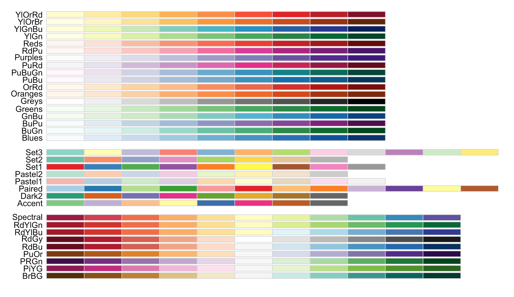

|
R NOTES
- PREREQUISITES
- R scripting language
- RStudio IDE
- THE TRIBE
-
- R ANALYSIS STRATEGY
- R Components
- setup structures | sorts |functions
- Methods
- input | wrangle (data sort & fix)
- R Statistical Analysis
- R Data Modeling
- R COMPONENTS & METHODS
- Work Files
-
- A Scientist’s Guide to Acquiring, Cleaning, and Managing Data in R, First Edition
- (2018) Samuel E. Buttrey and Lyn R. Whitaker
- contents
- ch1 R Introduction
- ch2 R Data, Part1: Vectors
- ch3 R Data, Part2: More Complicated Structures
- ch4 R Data, Part3: Text and Factors
- ch5 Writing Functions and Scripts
- ch6 Getting Data into and out of R
- Data Flair: R tutorials
- https://data-flair.training/blogs/r-tutorials-home/
- R overview
- R data analysis
- R structures
- R input/output
- R functions
- R control statements
- Rs C interface
TIDYVERSE WORLD
- collection of R packages
- data tools for transforming / visualizing data
- core packages:
- ggplot2
- dplyr
- grammar of data manipulation
- solve most common data manipulation challenges
- dyplr summary sheet (data transformation)
- tidyr
- create tidy data
- create data where
- each variable is in a column
- each observation is row
- each value in a cell
- readr
- purrr
- enhances Rs functional programming (FP) toolkit
- tools for functions and vectors
- tibble
- re-imagining of data frame
- stringr
- forcats
- Install: install.packages("tidyverse")
- Load: library(tidyverse)
- Additional specialized packages separate library()
- Useful functions
- tidyverse_conflicts( ) conflicts bw tidyverse & other packages
- tidyverse_deps( ) list all tidyverse dependencies
- tidyverse_logo( ) get tidyverse logo → using ASCII or unicode chars
- tidyverse_packages( ) list all tidyverse packages
- tidyverse_update( ) update tidyverse packages
- Loading data
- library(datasets) load datasets package
- library(gapminder) load gapminder package
- attach(iris) attach data to R search path
- Textbook notes: R with tidyverse
- R for Data Science:
Visualization, Model, Transform, Tidy, & Import
- (2017) O’Reilly
Hadley Wickham & Garrett Grunewald:
- https://r4ds.had.co.nz/index.html
- explore
- wrangle
- program
- 18: pipes | 19: functions | 20: vectors | 21: iteration
- model
- 23: model basics | 24: model building | 25: many models
- communicate
- 27: R markdown | 28: graphics for communication | 29: R markdown formats | 30: R markdown workflow
- Course notes: R with tidyverse
- UBC: Introduction to Data Science
- https://ubc-dsci.github.io/introduction-to-datascience/
- Introduction to Data Science
- Reading data locally & from the web
- Cleaning & wrangling data
- Effective data visualization
- Version control with Github
- Classification I: training & predicting
- Classification II: evaluating & tuning
- Regression I: K-nearest neighbours
- Regression II: linear regression
- Clustering
- Course notes: R with tidyverse
- UBC: Stats 545 - by Jenny Bryan
- https://stat545.com/
- DATA VISUALIZATION
- Colour

- Graphs
- Cartography
- cartography sheet sheet with R
- Tableau
- Tables
- stringizer | xtable | kable (with knitr)
- Proprietory Apps
- DEVELOPMENT
- Data Base Tools
- Application Development Tools
back home
|